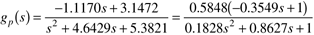
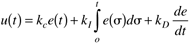
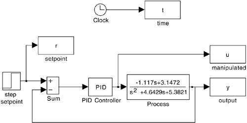
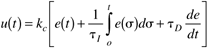
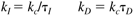

M5.4 Classical Feedback Control (Chapters 5 and 6)
Closed-Loop Performance Requirements
It is desirable to be able to make setpoint changes of ± 0.1 gmol/liter. Also, the manipulated dilution rate should not change by more than 0.4 min-1, and there should be less than 20% overshoot. Here, we assume that the process is represented by the transfer function

Problem 1.
Based on the transfer function given, answer the following questions:
For a desired concentration change of 0.1 gmol/liter, what is the expected steady-state manipulated dilution rate change? If the volume is 1 liter, what is the expected steady-state flow-rate change? If the volume is 1000 gallons, what is the expected steady-state flow-rate change? To keep the manipulated input dilution rate change less than 0.4 min-1, what is the maximum concentration setpoint change that can be made? What are the units of the controller proportional gain, kc?
Problem 2.
Generate the SIMULINK block diagram shown in Figure M5-4. Recall that the default SIMULINK controller block requires parameters in the decoupled (kc,kI,kD) form,


while we use the following form in this text:

If the default SIMULINK PID controller block is used, then the tuning parameters for the integral and derivative modes are

Note that variables can be specified on the input window for the PID controller block, so that numerical values can simply be entered in the MATLAB command window before each new simulation.
Perform some initial simulations with arbitrary PID parameter values. Use a setpoint change of 0.1 at t = 1 minute. Adjust the tuning parameters to obtain an "acceptable" closed-loop response, so that the concentration overshoot and maximum input flow-rate changes are satisfied.
Problem 3.
Consider P-only control and a step setpoint change of 0.1 gmol/liter at t = 1 minute.
Find the offset when kc = 1 is used. Is this the amount expected? Show your calculation. Discuss the behavior as kc is increased. At what value of kc does the system appear to go unstable? Is this consistent with your analytical results from the Routh stability criterion? Show those results here.
Note that the system solver (integration code), although accurate, may generate points that yield a "coarse" plot. You can make the curves appear smoother by selecting the parameters pull-down menu and changing refine from 1 to 2 or 4. This generates more points for plotting purposes.
Problem 4.
Perform a Ziegler-Nichols closed-loop design (based on Chapter 6).
Find the proportional gain that causes the response to continuously oscillate (actually, you found the proportional gain for this in Problem 3b above), and the "ultimate period" of this oscillation. Find the Ziegler-Nichols closed-loop controller parameters for P, PI, and PID (ideal derivative) controllers for this process. Remember that the default SIMULINK PID controller block uses a different form for the PID controller than we do. Compare the responses of the Ziegler-Nichols P, PI, and PID controllers to a step setpoint change of 0.1 gmol/liter at t = 1 minute. Compare the responses for Tyreus-Luyben PI parameters (Chapter 6) with Ziegler-Nichols PI. Compare the responses of ideal and "real" (use a transfer function to generate a "real" derivative) PID controllers, tuned using the Ziegler-Nichols approach.
Problem 5.
Understanding the effect of tuning parameters—PI control.
Consider now the effect of integral action. Start with a nominal case of the proportional gain, kc, set to 1 and the integral time, tI, set to 2 minutes. What happens to the output and manipulated input responses as tI is decreased? Does there appear to be a value where the closed-loop system goes unstable? Is this consistent with the Routh stability criterion? Show your analytical work.
 |